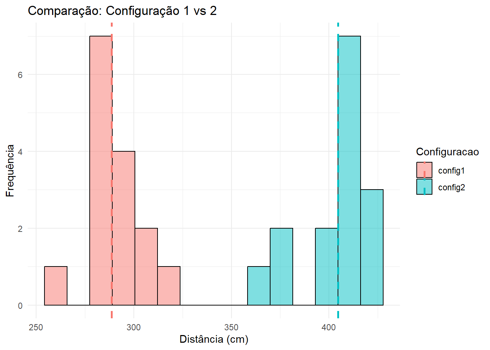

| config1 | 280 | 283 | 284 | 260 | 278 | 292 | 286 | 293 | 279 | 318 | 287 | 294 | 303 | 292 | 301 |
| config2 | 414 | 422 | 415 | 372 | 398 | 402 | 368 | 409 | 421 | 375 | 420 | 411 | 415 | 413 | 414 |


Relatório 08: Teste de hipóteses para duas populações
Estatística e Probabilidade
Prof. Ben Dêivide (DEFIM/CAP/UFSJ)
1 Introdução
Quando se deseja comparar duas populações, é necessário realizar um teste de hipóteses para verificar se existe diferença significativa entre elas. Este relatório será aplicado os conceitos de teste de hipóteses para duas populações, utilizando dados coletados apartir do experimento da catapulta utilizando duas configurações diferentes e em 15 lançamentos cada uma.
2 Objetivos
Determinar apatir de amostras coletadas se existe diferença significativa entre as médias das duas populações, utilizando o teste de hipóteses para duas populações.
2.1 Objetivos específicos
- Coletar dados da catapulta utilizando duas configurações diferentes;
- Calcular as médias e desvios padrões das amostras coletadas;
- Realizar o teste de hipóteses para duas populações.
- Discutir os resultados obtidos e suas implicações.
3 Fundamentação Teórica
Para comparar duas populações, é necessário realizar um teste de hipóteses para verificar se existe diferença significativa entre elas. O teste de hipóteses é uma técnica estatística que permite avaliar se uma afirmação sobre uma população é verdadeira ou falsa, com base em dados amostrais.
Neste relatório, deseja-se comparar as médias de duas populações apartir de amostras coletadas utilizando duas configurações diferentes da catapulta. Para isso, será utilizado o teste t de Student para duas amostras independentes, que é apropriado quando se deseja comparar as médias de duas populações com variâncias desconhecidas e amostras pequenas.
3.1 Hipóteses
Uma hipótese é uma afirmação sobre uma população que pode ser testada com base em dados amostrais. No teste de hipóteses, existem duas hipóteses: a hipótese nula (H0) e a hipótese alternativa (H1).
A hipotése nula tipicamente, procura mostrar que o efeito estatístico sendo estudado não existe, ou seja, no caso da comparação de duas médias, \(H_0: \mu_1 = \mu_2\), onde \(\mu_1\) e \(\mu_2\) são as médias das duas populações. A hipótese alternativa, por outro lado, procura mostrar que o efeito estatístico existe, ou seja, no caso da comparação de duas médias, \(H_1: \mu_1 \neq \mu_2\).
3.2 Teste
Um teste de hipóteses é uma técnica estatística que permite avaliar se uma afirmação sobre uma população é verdadeira ou falsa, com base em dados amostrais. O teste t de Student para duas amostras independentes é apropriado quando se deseja comparar as médias de duas populações com variâncias desconhecidas e amostras pequenas.
Para populações com variâncias desconhecidas, o teste t de Student para duas amostras independentes é utilizado. A estatística de teste é calculada como:
\[t = \frac{\bar{x}_1 - \bar{x}_2}{\sqrt{\frac{s_1^2}{n_1} + \frac{s_2^2}{n_2}}} \tag{1}\]
E os graus de liberdade são calculados como:
\[df = \frac{\left(\frac{s_1^2}{n_1} + \frac{s_2^2}{n_2}\right)^2}{\frac{\left(\frac{s_1^2}{n_1}\right)^2}{n_1 - 1} + \frac{\left(\frac{s_2^2}{n_2}\right)^2}{n_2 - 1}} \tag{2}\]
3.3 Confiança
A confiança em um teste de hipóteses é a probabilidade de não rejeitar a hipótese nula quando ela é verdadeira. Geralmente, o nível de confiança é fixado em 95% (α = 0.05), indicando que há 5% de probabilidade de cometer um erro do tipo I (rejeitar a hipótese nula quando ela é verdadeira).
Aumentar ou diminuir o nível de confiança afeta a probabilidade de cometer erros do tipo I e do tipo II. Um nível de confiança mais alto (por exemplo, 99%) reduz a probabilidade de cometer um erro do tipo I, mas aumenta a probabilidade de cometer um erro do tipo II. Por outro lado, um nível de confiança mais baixo (por exemplo, 90%) aumenta a probabilidade de cometer um erro do tipo I, mas reduz a probabilidade de cometer um erro do tipo II.
3.4 Erro tipo I e tipo II
O erro tipo I ocorre quando a hipótese nula é rejeitada quando ela é verdadeira. A probabilidade de cometer um erro tipo I é denotada por α, que é o nível de significância do teste. Por exemplo, se α = 0.05, há uma probabilidade de 5% de rejeitar a hipótese nula quando ela é verdadeira.
O erro tipo II ocorre quando a hipótese nula não é rejeitada quando ela é falsa. A probabilidade de cometer um erro tipo II é denotada por β, que depende do tamanho da amostra, da variabilidade dos dados e do nível de significância do teste. Por exemplo, se β = 0.20, há uma probabilidade de 20% de não rejeitar a hipótese nula quando ela é falsa.
3.5 Poder do teste
O poder do teste é a probabilidade de rejeitar a hipótese nula quando ela é falsa. O poder do teste é calculado como 1 - β, onde β é a probabilidade de cometer um erro tipo II. Um poder do teste mais alto indica uma maior capacidade de detectar diferenças significativas entre as populações.
3.6 Conclusão do teste de hipóteses
A conclusão do teste de hipóteses para duas populações depende dos resultados obtidos a partir das amostras coletadas. Se a hipótese nula for rejeitada, isso indica que há evidências suficientes para afirmar que as médias das duas populações são significativamente diferentes. Por outro lado, se a hipótese nula não for rejeitada, isso indica que não há evidências suficientes para afirmar que as médias das duas populações são significativamente diferentes.
4 Metodologia
Para a amostragem do experimento da catapulta. Será demarcado um ponto de referência para facilitar a medição da distância percorrida pelo projétil. Serão realizadas 15 medições para cada configuração da catapulta, totalizando 30 medições. As medições serão registradas em uma tabela.
Com os dados coletados, serão calculadas as médias e desvios padrões das amostras. Em seguida, será realizado o teste de hipóteses para duas populações, utilizando o teste t de Student para duas amostras independentes. O nível de significância será fixado em 5% (α = 0.05), e os resultados serão interpretados com base nas hipóteses formuladas.
5 Resultados e Discussão
5.1 Dados Coletados
Os dados coletados a partir do experimento da catapulta utilizando duas configurações diferentes são apresentados na tabela abaixo:
Nota
- Configuração 1: O-(Nível III), A+(Nível III), A-(Nível IV), B+(Nível VI)
- Configuração 2: O-(Nível III), A+(Nível III), A-(Nível IV), B+(Nível IV)
Utilizando o pacote R para calcular a distribuição das amostras:
library(ggplot2)
library(tidyr)
# Transform wide data matrix to a long-format dataframe
df_long <- pivot_longer(df, cols = c(config1, config2),
names_to = "Configuracao", values_to = "Distancia")
# Compute statistical aggregates dynamically
means <- aggregate(Distancia ~ Configuracao, df_long, mean)
# Construct the layered geometry
ggplot(df_long, aes(x = Distancia, fill = Configuracao)) +
geom_histogram(alpha = 0.5, position = "identity", bins = 15, color = "black") +
geom_vline(data = means, aes(xintercept = Distancia, color = Configuracao),
linetype = "dashed", linewidth = 1) +
labs(title = "Comparação: Configuração 1 vs 2",
x = "Distância (cm)",
y = "Frequência") +
theme_minimal()
- Configuração 1: \(\bar{x}_1 = 288.67\) cm, \(s_1 = 13.24\) cm
- Configuração 2: \(\bar{x}_2 = 404.6\) cm, \(s_2 = 18.25\) cm
5.2 Hipótese do experimento
A hipótese do experimento é que há uma diferença significativa na distância percorrida pelo projétil entre as duas configurações da catapulta.
\(H_0: \mu_1 = \mu_2\) (não há diferença significativa entre as médias das duas populações)
\(H_0: \mu_1 - \mu_2 = 0\)
Logo a hipótese alternativa é:
\(H_1: \mu_1 - \mu_2 \neq 0\) (há diferença significativa entre as médias das duas populações)
5.3 Testando a hipótese
Para testar a hipótese, será utilizado o teste t de Student para duas amostras independentes. O nível de significância será fixado em 5% (α = 0.05).
Com base na Equação 1 e médias amostrais \(\bar{x}_1 = 288.67\) e \(\bar{x}_2 = 404.6\), desvios padrões amostrais \(s_1 = 13.24\) e \(s_2 =18.25\), e tamanhos amostrais \(n_1 = n_2 = 15\), a estatística de teste é calculada como:
\[t = \frac{288.67 - 404.6}{\sqrt{\frac{13.24^2}{15} + \frac{18.25^2}{15}}} \]
\[t = \frac{-115.93}{\sqrt{\frac{175.30}{15} + \frac{333.06}{15}}} \]
\[t = \frac{-115.93}{\sqrt{11.69 + 22.20}} \]
\[t = \frac{-115.93}{\sqrt{33.89}} \]
\[t = \frac{-115.93}{5.82} \]
\[t = -19.92\]
5.3.1 Graus de liberdade
Para calcular os graus de liberdade, utilizamos a Equação 2:
\[df = \frac{\left(\frac{13.24^2}{15} + \frac{18.25^2}{15}\right)^2}{\frac{\left(\frac{13.24^2}{15}\right)^2}{15 - 1} + \frac{\left(\frac{18.25^2}{15}\right)^2}{15 - 1}}\]
\[df = \frac{\left(\frac{175.30}{15} + \frac{333.06}{15}\right)^2}{\frac{\left(\frac{175.30}{15}\right)^2}{14} + \frac{\left(\frac{333.06}{15}\right)^2}{14}}\]
\[df = \frac{\left(11.69 + 22.20\right)^2}{\frac{11.69^2}{14} + \frac{22.20^2}{14}}\]
\[df = \frac{33.89^2}{\frac{136.61}{14} + \frac{492.84}{14}}\]
\[df = \frac{1148.92}{9.76 + 35.20}\]
\[df = \frac{1148.92}{44.96}\]
\[df = 25.55\]
Logo, os graus de liberdade são arredondados para \(25\).
Nota
Os graus de liberdade são arredondados para baixo , pois o teste t de Student para duas amostras independentes requer que os graus de liberdade sejam um número inteiro. Portanto, arredondar para cima aumenta as chances do Erro Tipo I, logo, é mais conservador arredondar para baixo.
5.3.2 Tabela t de Student
Com \(\alpha = \frac{0.05}{2} = 0.025\) e \(df = 25\), o valor crítico da tabela t de Student é \(t_{crit} = 3.0782\).
Nota
O valor de \(\alpha\) é dividido por 2, pois o teste é bilateral, ou seja, estamos interessados em detectar diferenças significativas em ambas as direções (maior ou menor).
5.3.3 Comparando o valor crítico com a estatística de teste
O valor crítico da tabela t de Student é \(t_{crit} = 3.0782\), enquanto a estatística de teste calculada é \(t = -19.92\). Como o valor absoluto da estatística de teste é maior que o valor crítico (\(|t| > t_{crit}\)), a hipótese nula é rejeitada.
5.4 Conclusão do teste
Com base nos resultados obtidos, rejeita-se a hipótese nula \(H_0: \mu_1 = \mu_2\), indicando que há evidências suficientes para afirmar que as médias das duas populações são significativamente diferentes. Portanto, conclui-se que a configuração da catapulta tem um efeito significativo na distância percorrida pelo projétil.
Como o valor da estatística de teste é negativo, pode-se concluir que a Configuração 1 resulta em uma distância menor do que a Configuração 2.